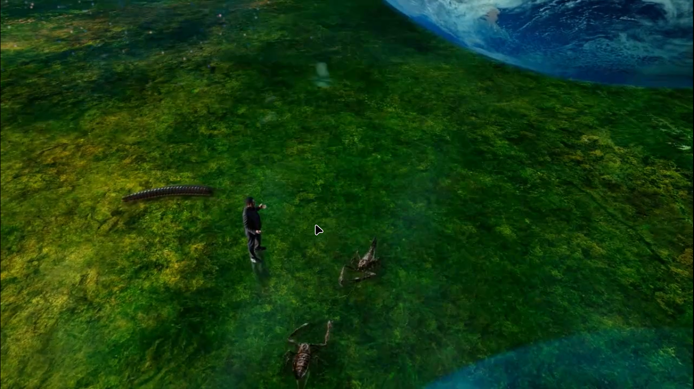
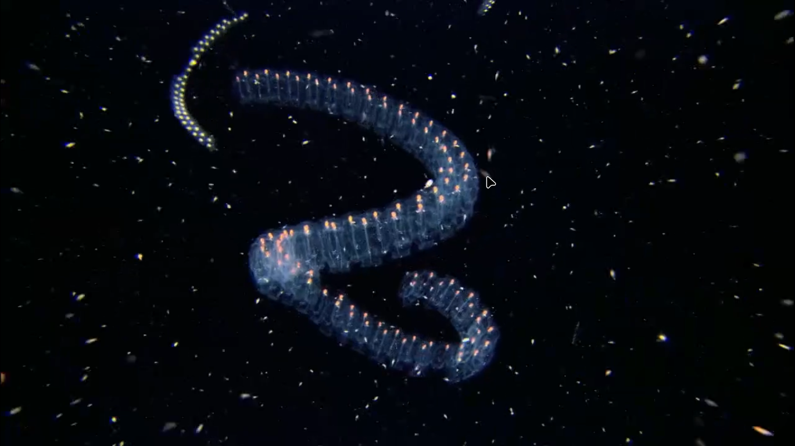
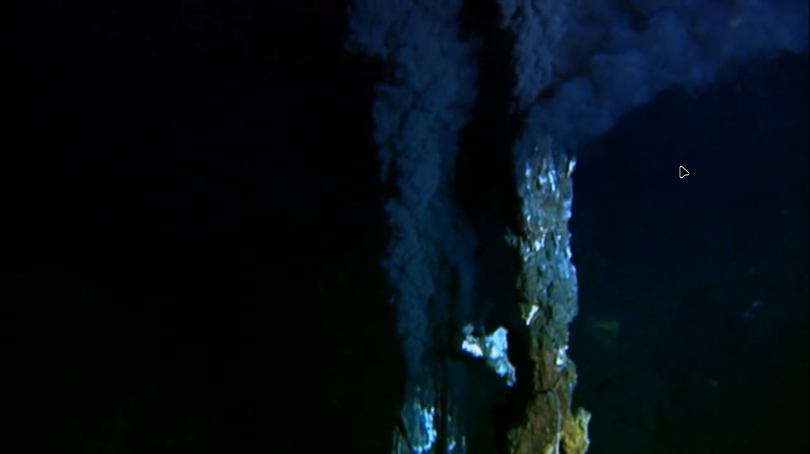
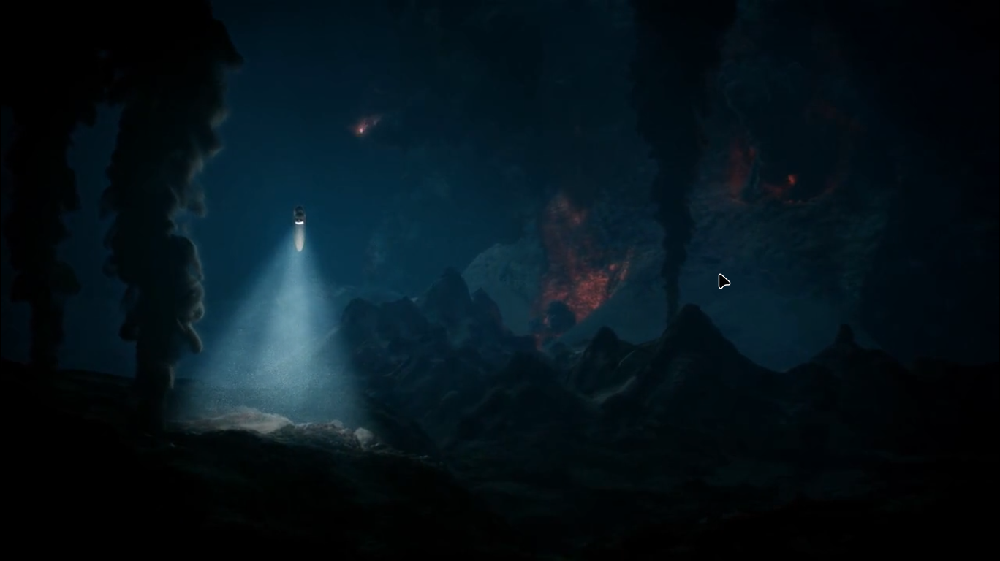
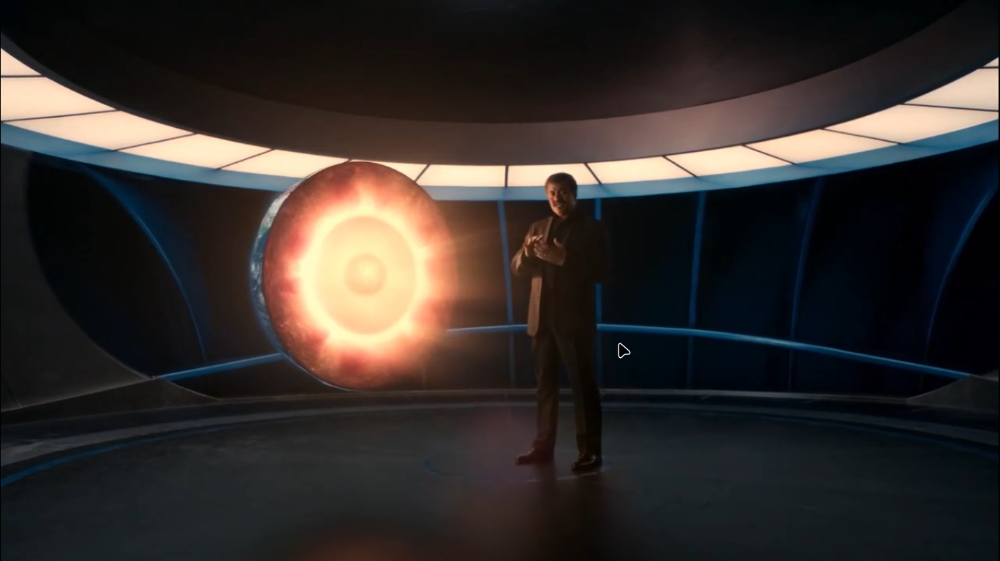
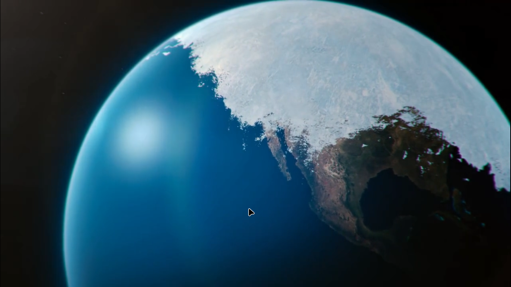

Insects don't have lungs , they absorb oxygen through their body holes , earlier oxygen was 2X in atmosphere and insects,plants,trees were much bigger
Ozone layer : natural sunscream against uv rays
I we go below 1 KM in water , it's darkness
Below deep water , where there is no light ,no photosynthesis, there is bio luminecense , there is a good foodchain , there is chemosynthesis
They are eating this smoke of hydrogen suplphide and big animals eating small animals .
 There is an iron core at the center of the earth
then we have a molten iron core
then mental , earth in (liquid)soup form
crust , is as thin as the apple peal , compared to below surfaces .
One disaster that destroys one species is proven to be a great opportunity for another species .
Ice age
